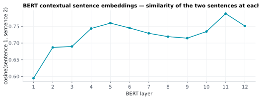

6.4.5BERT contextual sentence embeddings
A 768-dimensional vector per sentence at each of BERT's 12 transformer layers — the sentence-level analogue of the word-level BERT embedding.
6.4.5.1What it is
A 768-dimensional vector per sentence at each of BERT's 12 transformer
layers — the sentence-level analogue of the
word-level BERT embedding. Output shape:
(n_sentences, 12, 768). Each sentence's vector is the mean of the
contextual embeddings of its non-PUNCT content words at the same
layer.
6.4.5.2See it

6.4.5.3In your output
| variable | size | MATLAB class |
|---|---|---|
embeddings | 2 × 12 × 768 | single |
sentence_id | 1 × 2 | int64 |
sentence | 1 × 2 | cell |
is_valid | 1 × 2 | uint8 |
6.4.5.4MATLAB
S = load('sentence/LJ003-0007_bert_sentence.mat');
whos('-file', 'sentence/LJ003-0007_bert_sentence.mat') % variables, sizes, classes
size(S.embeddings) % 2 x 12 x 768 (single) = sentences x layers x dims
a = squeeze(S.embeddings(1, :, :)); b = squeeze(S.embeddings(2, :, :));
c = sum(a .* b, 2) ./ (vecnorm(a, 2, 2) .* vecnorm(b, 2, 2));
plot(1:12, c, 'o-'); xlabel('BERT layer'); ylabel('cosine(sentence 1, sentence 2)')
6.4.5.5In the code
Source: sensi/extractors/bert_embed.py:embed_bert_words_and_sentences
What the code does (verified against the source):
The sentence embeddings are produced in the same forward pass as the word-level embeddings — see that doc's implementation section for the full sliding-window / left-context / PUNCT-handling details.
For each sentence, after the forward pass:
content_positionscollects the WordPiece subword positions (not pre-pooled word vectors) belonging to every non-PUNCT word in the sentence.- The sentence vector at each layer is a single-stage mean over all of those subword positions directly:
sent_emb[s_pos] = stacked[content_positions].mean(axis=0)
where stacked is the (seq_len, n_layers, hidden) array of BERT
hidden states. This is not the same as averaging the
already-pooled per-word vectors from
the word-level embeddings: a word with more
subwords contributes proportionally more terms to this mean, so it
implicitly carries more weight than a single-subword word. The two
formulations are only numerically identical when every content word
in the sentence is a single WordPiece token.
- Sentences whose every content word failed alignment / tokenization
(e.g. all-PUNCT sentences) produce a zero vector with
is_valid=False.
Output .mat fields — flat top-level variables (not a nested struct),
so embeddings stays backward-compatible:
| Field | Shape | Meaning |
|---|---|---|
embeddings |
(n_sentences, 12, 768) float32 |
per-layer sentence vectors |
sentence_id |
(n_sentences,) int |
spaCy sentence id |
sentence |
{n_sentences} cellstr |
the sentence text |
is_valid |
(n_sentences,) logical |
False for empty / all-PUNCT sentences |
Why:
- Mean-pool over content words' subwords rather than over every subword in the window — the spec is explicit: aggregation excludes PUNCT and any left-context subwords from prior sentences, keeping only the current sentence's own non-PUNCT subword positions. ⚠️ This means punctuation is excluded from the sentence embedding even though it was already excluded from BERT input; both exclusions are consistent.
- Shipped as
(n_sentences, 12, 768)— preserves the per-layer structure for downstream layer-sweep analyses, matching the word-level shape withn_sentencesinstead ofn_words. - Mean-pool rather than the CLS token — raw BERT's CLS vector is a poor unsupervised sentence embedding: on semantic-similarity benchmarks, averaging BERT's token vectors scored 54.8 vs 29.2 for the CLS output Reimers 2019. Mean-pooling is SENSI SpeechFeatures's choice, not a convention of the brain-encoding papers: Toneva 2019 and Schrimpf 2021 instead use the hidden state at the last word after feeding the preceding context. If you want that representation, take the sentence's final word from the word-level embeddings, which are computed with left context.
6.4.5.6Library
Same setup as the word-level extractor — see
master_bert_word.
6.4.5.7EEG rationale
Sentence-level embeddings are the right granularity for:
- Sentence-locked ERP analyses of meaning integration / discourse effects, where the regressor is "how similar is this sentence's meaning to the preceding one?" (Toneva 2019, Caucheteux 2022).
- Discourse-coherence analyses — sentence-to-sentence cosine similarity in this space tracks topic continuity / discourse shifts more cleanly than word-to-word similarity (Goldstein 2022).
- Cross-sentence prediction — predicting the next sentence's
embedding given the current one's is the standard "discourse-level
surprisal" measure, complementary to word-level
Surprisal.
All 12 layers are shipped intact for the same reason as the word-level column: optimal-layer choice for sentence-level EEG / fMRI prediction is task- and ROI-dependent (Toneva 2019).
6.4.5.8Papers
See master_bert_word for the full reference
list; the sentence-level embedding inherits the same foundational
papers (Devlin 2019, Tenney 2019, Rogers 2020, Toneva 2019,
Schrimpf 2021, Goldstein 2022) plus the sentence-level-specific:
-
Caucheteux 2022 Caucheteux & King. Brains and algorithms partially converge in natural language processing. Communications Biology. doi:10.1038/s42003-022-03036-1 — sentence-level LM representations and brain prediction.
-
Reimers 2019 Reimers & Gurevych. Sentence-BERT: Sentence Embeddings using Siamese BERT-Networks. EMNLP-IJCNLP 2019. arXiv:1908.10084 — §4.1: averaged BERT embeddings 54.81 vs CLS 29.19 mean correlation on STS tasks.
-
Toneva 2019 Toneva & Wehbe. Interpreting and improving natural-language processing (in machines) with natural language-processing (in the brain). NeurIPS 2019. arXiv:1905.11833 — each word's feature is the layer's hidden state for that word after "passing the most recent k words" through the network.
-
Schrimpf 2021 Schrimpf, Blank, Tuckute, Kauf, Hosseini, Kanwisher, Tenenbaum, Fedorenko. The neural architecture of language: Integrative modeling converges on predictive processing. PNAS 118(45), e2105646118. doi:10.1073/pnas.2105646118 — Methods (bioRxiv v3): for transformers, "we used the representation of the last word"; the mean only for static embeddings.